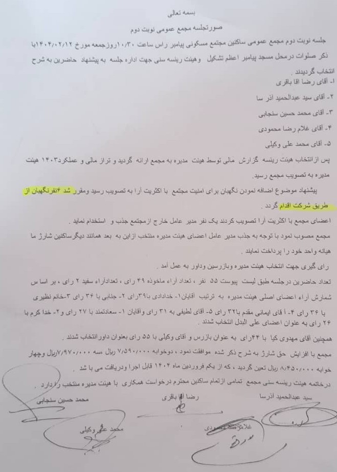

اخبار و اطلاعیهها
آگهی دعوت به مجمع عمومی فوقالعاده مجتمع مسکونی پیامبر
۳۰ خرداد ۱۴۰۴
به استناد به ماده 15 اساسنامه مجتمع مسکونی پیامبر و با توجه به اختیارات هیئت مدیره و به درخواست جمعی از ساکنین، بدینوسیله از کلیه ساکنین (مالکین) مجتمع مسکونی پیامبر دعوت میگردد در جلسه مجمع عمومی فوقالعاده این مجتمع در روز جمعه مورخ ۳۰/۰۳/۱۴۰۴ ساعت ۱۰ صبح در محل مسجد پیامبر واقع در خیابان پیامبر مرکزی که با دستور جلسه ذیل تشکیل میگردد حضور بهم رسانید.
دستور جلسه:
دستور جلسه:
- رای گیری در خصوص تغییر یکپارچه مادههای 14، 15، 16، و 27 اساسنامه
- ارائه توضیحات هیئت مدیره قبلی در خصوص بودجه پیشنهادی و نحوه محاسبه شارژ
- رای گیری مجدد در خصوص تغییر تعداد نگهبانان و نوع پیمان نگهبانان
- رای گیری در خصوص پیادهسازی سیستم مدیریت هوشمند تردد خودرو
- تصویب و درج قرارداد سلب مسئولیت هیئت مدیره در اساسنامه
آمادگی جهت برگزاری مجمع فوقالعاده به درخواست ساکنین
۲ خرداد ۱۴۰۴
به اطلاع کلیه ساکنین محترم میرساند، مجمع عمومی فوقالعاده مجتمع مسکونی پیامبر به درخواست ساکنین عزیز بزودی برگزار و دستور جلسه اطلاع رسانی خواهد شد.
صورتجلسه مجمع عمومی نوبت دوم مطابق با عکس فوق
۲ خرداد ۱۴۰۴

بسمه تعالی
جلسه نوبت دوم مجمع عمومی ساکنین مجتمع مسکونی پیامبر راس ساعت ۱۰:۳۰، در روز جمعه مورخ ۱۴۰۴/۰۳/۱۲ با ذکر صلوات در محل مسجد پیامبر اعظم تشکیل شد
پس از انتخاب هیئت رئیسه گزارش مالی توسط هیئت مدیره به مجمع ارائه گردید و تراز مالی و عملکرد ۱۴۰۳ هیئت مدیره به تصویب مجمع رسید.
پیشنهاد موضوع اضافه نمودن نگهبان برای امنیت مجتمع با اکثریت آرا به تصویب رسید و متقاضیان آن
از طریق شرکت اقدام گردید.
اعضای مجمع با اکثریت آرا تصویب کردند یک نفر مدیر عامل خارج از مجتمع جذب و استخدام نمایند.
مجمع مصوب نمود با توجه به جذب مدیر عامل اعضای هیئت مدیره منتخب از بین به بعد همانند دیگر ساکنین شارژ یا هیات واحد خود را پرداخت نمایند.
رای گیری جهت انتخاب هیئت مدیره و بازرسین و داور به عمل آمد.
تعداد حاضرین در جلسه طبق لیست پیوست ۵۵ نفر، تعداد آراء ماخوذه ۴۹ رای، تعداد آراء سفید ۲ رای، بر اساس شمارش آراء اعضای اصلی هیئت مدیره به ترتیب آقایان:
۱- خدادادی با ۴۹ رای
۲- جنابی با ۳۶ رای
۳- آقامقدم با ۳۲ رای
۴- آقای لطفی با ۳۱ رای و آقای واثقان ۱- مساعدتگاه با ۲۷ رای و ۲- خدا کرم با ۲۶ رای به عنوان اعضای علی البدل انتخاب شدند.
همچنین آقای مهدوی کیا با ۴۲ رای به عنوان بازرس و آقای وکیلی با ۵۵ رای بعنوان داور انتخاب شدند.
مجمع با افزایش حق شارژ به شرح ذکر شده موافقت نمود. و ذخیره ۲۵۰۰۰۰۰ ریال سه میلیون و هفتصد و چهل و چهار هزار و هشتصد و پنجاه ریال تعیین گردید که از یکم فروردین ماه ۱۴۰۴ قابل اجرا و دریافت میباشد.
در خاتمه هیئت رئیسه مجمع تمامی ساکنین محترم درخواست همکاری با هیئت مدیره منتخب را دارد.
نصب دوربینهای امنیتی جدید در ورودیها
۱ خرداد ۱۴۰۴
جهت افزایش امنیت مجتمع، دوربینهای مداربسته جدید در ورودیها و پارکینگ نصب شدهاند. خواهشمند است نکات ایمنی را رعایت فرمایید.